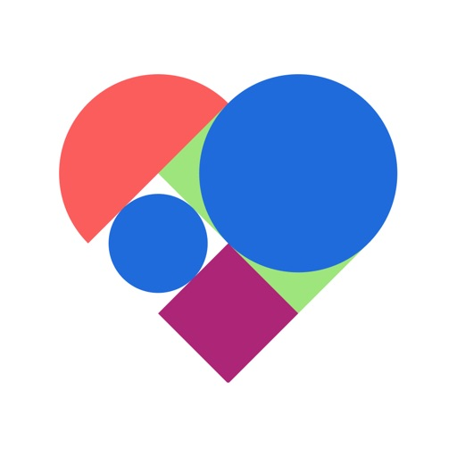

Public store signal
4.78 iOS and 4.80 Android
Twin's app is not broadly disliked. The opportunity is to remove friction in a high-value flow, not to rescue a broken product.

Twin Health already earns strong public ratings because members feel real metabolic outcomes. The recurring public friction is narrower: the moment users have to capture a meal, trust the color logic, and give the AI usable data.
That makes this a design-quality problem before it becomes an AI-quality problem, which is exactly why it fits Joseph Huang's current AI-first product remit.
Twin's app is not broadly disliked. The opportunity is to remove friction in a high-value flow, not to rescue a broken product.
The mobile product is mature enough that small UX gains can compound through retention, coaching efficiency, and data quality.
Those complaints cluster around meal logging, color trust, onboarding, and care visibility instead of random one-off issues.
The public digital surface is already carrying complexity. A tighter mobile flow has to feel faster, clearer, and more trustworthy.
The best public signal is not "people hate the product." It is more useful than that: members praise coaching and glucose insight, then complain when the app makes the data-entry moment harder than it should be.
Joseph's CRM history points to AI-first guidance, conversational UX, and faster feedback loops across Twin's member and clinician products. A redesign that reduces logging friction gives those AI systems better raw material while also making the experience feel more personal.
"Add multiple items to a meal at once" and let me save my own recipes with serving logic.iOS review, February 2026
Users describe food colors as inconsistent and sometimes arbitrary for the same food.iOS and Android review pattern, late 2025 to early 2026
Several Android reviews ask for a website view, clearer appointments, and visible response states in messaging.Android review pattern, late 2025
Public Reddit search results surface threads about employer pressure, insulin changes, and trust in the program model.Web search of public Reddit results, 2026-03-13
Users want one-shot meal entry, recipe memory, and faster correction when a food lands in the wrong category or meal slot.
When food colors shift without a clear reason, the recommendation engine can feel arbitrary even if the clinical model is sound.
Onboarding bugs, security-code failures, disconnected sensors, and poor appointment visibility weaken trust before results can win users back.
This concept does not add another broad AI layer. It tightens the exact moment where Twin's intelligence depends on what the member can capture, understand, and trust in under a minute.
Find every ingredient separately.
Repeat the same add flow item by item.
Users have to rebuild home meals instead of saving household recipes once and reusing them.
Recent feedback asks for multi-item entry, clearer food logic, and easier corrections because the AI only feels right when the input feels effortless.
Likely stable. Rice is the only item worth adjusting if the goal is a flatter post-meal curve.
Turn this into "Weeknight salmon bowl" so the next entry takes seconds.
The member confirms a structured suggestion instead of manually constructing one. That lowers effort and raises data quality at the same time.
Your last three similar meals produced a sharper 60-minute spike than your target range. Reducing the portion by one-third keeps the rest of the meal green.
Greek yogurt moved from orange to green after five stable responses. Toast remains orange because portion size still drives the spike.
Twin can attach the full meal, the AI rationale, and the user's question into the coach thread so support starts from context instead of back-and-forth clarification.
It improves a daily repeat action, supports the AI story Joseph is already building, and turns public review complaints into a visible product-quality win.
Faster logging, better meal completeness, higher trust in food colors, fewer coach clarifications, and cleaner behavior data for personalized guidance.
Native mobile implementation, AI-assisted capture UX, recipe and explainability flows, instrumentation, and fast iteration on the highest-friction member journey.
Twin already has the outcome story. The sharper opportunity is to make the data-entry moment feel worthy of that promise. That is the kind of mobile product improvement that can compound across retention, coaching efficiency, and confidence in every downstream recommendation.